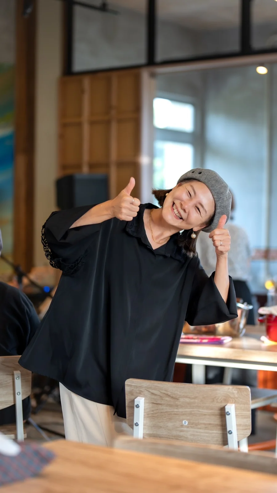

November Creative Portrait11月のクリエイティブ特集
Mutsumi Kouno河野睦美さん
From wedding emcee to creating celebrations of her own. Meet the woman whose courage grew with the warmth of Miyakojima's people.
婚礼司会から、結婚式そのものをつくる仕事へ。宮古島の人々に支えられ、「やってみたい」をかたちにしてきた睦美さんの物語。
Read her portrait睦美さんの物語を読む Kounotori Wedding幸の鳥Weddingのご案内